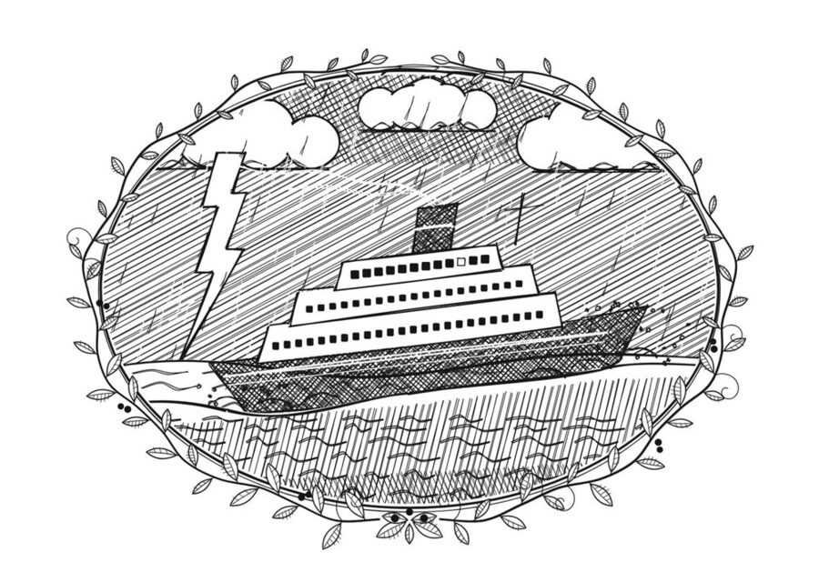
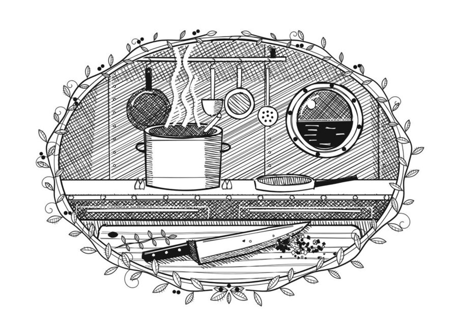

Prologue

The storm hit the Aurora broadside a little after eleven, and the whole ship rang like a struck pot.
High on deck 12, in the empty Starlight Lounge, David Saeron held the brass rail beneath the forward windows and watched the North Atlantic try to climb in. The bar had been shuttered at nine. The chairs were stacked. Every few seconds lightning ripped the night open, showed him a black slope of water streaked with foam, and slammed it shut again. Rain hit the glass sideways, in fistfuls.
He was still in his whites. There was lamb jus on one cuff and the galley in his hair, and his knuckles on the rail had gone the color of the jacket.
Storms did not frighten him. He had been raised inside one. The sea, at least, made no secret of wanting to drown you, and after the house he grew up in, there was something restful in that kind of honesty.
For two years he had been running from a family that did not believe in the word goodbye. The Saerons of Harlow, Indiana, held mortgages and judges and grudges, and they kept all three for life. Love, in that house, had been a ledger. Loyalty had been a debt that never stopped collecting interest, and a son paid it with whatever the family asked for. David had paid with his hands, for ten years, until the night he looked down at them and could not stand what they had become.
So he had left with a duffel bag, a borrowed name, and the one skill he was not ashamed of, and carried all three down into a ship’s galley where nobody asked where you had learned to hold a knife. Eighteen months of feeding strangers. Eighteen months of being no one.
But a past like his did not stay where you left it. It followed. And the farther he ran, the longer it grew, like a shadow at the end of the day.
At the far end of the windows, Sophie stood with one palm pressed to the glass, as if she could feel the storm through it.
She had been a puzzle from the first night. Composed. Beautiful in a way she seemed to resent. Green eyes that held their secrets as a safe holds money. She had walked into his life as if she had a key to it, and every time he thought he had worked out which door she had come through, she showed him another.
Since sunset she had barely spoken. Out on the promenade, with the deck shuddering under their feet, she had said three words, and then nothing at all.
We’re not alone.
The words had followed him through four hundred plates of lamb and the ship’s long sick roll as the weather came on. He had spent the whole service trying to decide whether she had said them like a frightened woman, or like a soldier.
Lightning. In the black glass he saw her reflection turn, and he let go of the rail and turned to meet it.
Her eyes were wide. Fear, maybe. Or regret. On her, he had never been able to tell the two apart.
“They didn’t know you were on this ship,” she said. “Not for certain. They had a rumor. A cook on a cruise liner who matched your description, who didn’t drink and didn’t talk and used a knife like a surgeon. Lucas has people at crewing agencies. Someone in Miami said maybe. So they put me aboard to look.” She drew a breath. “The first night, at the welcome dinner, I looked through the galley doors and saw you at the pass. I went back to my cabin and sent one word.”
He waited.
“Confirmed.”
The word dropped into the dark between them like a stone into a well.
He had known she came aboard for them. He had not known how long she had been coming.
Sophie was not someone who had stumbled into the wreckage of his past. She was a thread in it, stitched through every mile of his escape, and all this time he had been running along that thread as if it were a road.
The storm went on hammering the glass, but David could no longer hear it. He could hear only his own breathing, and under it, the thing he had spent two years refusing to believe: that the past he had run from was closer than he had ever imagined.
Six days earlier…
Chapter OneThe Galley

The fog came down the Hudson like something poured from a pot.
It settled over Pier 88 a little after five in the morning, smelling of river mud and diesel, and by the time the first provision trucks backed up to the Aurora’s shell door, the ship had vanished above deck 4. Fourteen decks of white steel, and David could see three of them. The rest was rumor. Only the pier was real: the trucks, the forklifts beeping backward through the murk, and the clipboard in his hand, its top sheet going soft in the damp.
“Forty cases lemons,” the driver said.
David counted anyway. Counting gave his eyes something to do while they did the other thing, the thing they had done every morning for two years: the faces. Driver, sixties, Yankees cap. Forklift kid in headphones. Two longshoremen smoking by a bollard. Nobody standing still who should be moving. Nobody moving who should be standing still.
“Thirty-eight,” he said.
“Says forty.”
“It says forty because somebody typed forty.” He tapped the shrink-wrap where the pallet stepped down at the back corner, two cases short of square. “Sign for thirty-eight, or spend your morning driving around Manhattan looking for two cases of lemons.”
The driver studied him, then let out a short honk of a laugh that the fog swallowed whole. “Thirty-eight,” he said, and scribbled.
The badge clipped to David’s jacket said D. MARSH, SOUS CHEF, GALLEY, under the photograph of a man with a short beard who had been told to look at the camera and had looked a little to the left of it. It had been a good badge for eighteen months. The name on it had cost four thousand dollars in the back room of a print shop in Baltimore, and the man who sold it had told him, licking his thumb to count the bills, that a name was like a coat: wear it every day and it starts to take your shape.
It had. That was the trouble with coats.
* * *
The lemons rode the conveyor into the ship, and the trucks kept coming: romaine sweating through its cardboard, wheels of Parmigiano, sides of beef in white shrouds, two thousand eggs stacked like a skyline. A crossing was the hungriest voyage a ship made. Eighteen hundred passengers, seven hundred crew, and nothing between Manhattan and Southampton but water. Whatever wasn’t loaded this morning did not exist.
At half past six a voice split the fog like a cleaver through a chicken back.
“Where are my lemons? Marsh! Tell me you have my lemons!”
Chef Marco Bellini came down the gangway in a camel overcoat over his whites, toque already on, because Marco held that a chef who took off his hat in public had stopped believing in God. He was sixty, built like a wine barrel, and came from a quarter of Naples where people apparently spoke only at the volume needed to reach the far end of a football stadium.
“Thirty-eight cases,” David said.
“Thirty-eight.” Marco clutched his chest like a man who had been shot. “I ordered forty.”
“They shorted us. I didn’t sign for forty.”
“This,” Marco told the forklift, the longshoremen and the fog, “is why I keep him. Every other sous-chef, he signs for forty, I find out in the middle of the ocean, I throw myself in the sea. Come. We have problems. Torres, my best waiter in the Meridian, is in the hospital. Something he ate. So the company sends me agency people.” He said agency the way other men said tax audit. “Waiters who never in their life carried a tray on a floor that moves. And a new purser. Lindqvist has food poisoning.” His face suggested the food poisoning had been chosen out of spite. “The new one came on last night. Gray suit. Smiles like the man who sells you the coffin.”
As if summoned, a man in a gray suit crossed the far end of the provisions dock. Forties, tall, a long clean jaw, a haircut that did not move in the wind. He carried a leather folio and spoke into a phone too low to hear, and David noted, in the part of his brain that never stopped noting things, that he was the only man on the pier with dry shoes.
The man’s eyes went over the shell door, the conveyor, the galley crew in their whites and fleeces. They passed across David like a hand moving along a shelf in the dark, feeling for one particular thing. They didn’t stop. Then the fog took him.
“Mercer,” Marco said. “Cole Mercer. You see? The coffin man.”
“He looks fine.”
“Everybody looks fine. Lemons look fine.” Marco slapped the pallet. “Inside, dry. Come.”
Forward, a crane was lifting a rust-red shipping container out of the murk. It turned slowly on its cables and sank into an open hatch in the bow. Another followed: white, a refrigeration unit humming on one end like a backpack, stenciled with letters and numbers too small to read from here.
“Since when do we carry freight?” David asked.
“Repositioning crossing. The company sells the space. Machinery, wine, who knows?” Marco waved a hand at the bow. “Maybe my Parmigiano for the summer. Maybe they are bringing me a better sous-chef.”
“They’d need a bigger box.”
Marco roared and steered him up the ramp with an arm around his shoulders, and David let himself be steered. After the life he’d had, it was a strange thing to be touched by a man who wanted nothing from him but lemons.
* * *
The main galley of the Aurora lived on deck 3, aft of the Meridian dining room, and it was the only place in the world where David Saeron knew where everything was.
It was a long steel cavern lit white as an operating room: twelve burners in a row, salamander broilers bolted at head height, combi ovens humming like jet engines at rest, tilting kettles big enough to bathe a child in. Across from the hot line lay the cold kitchen, the butchery, and the walk-in with its heavy door, and past them Priya Nair’s pastry kitchen, which smelled at every hour of browned butter and burnt sugar. Everything was bolted, latched or chained, so that a jar of capers could not, in a twenty-degree roll, become a missile. The deck was red tile with a grit finish, and under the tile the floor was never entirely still. David liked that. A floor that moved kept you honest.
He changed in the galley locker room behind the dry stores. Locker 31 carried a combination padlock he had bought himself, because the company padlocks all opened to the same master key and he had seen how many people had copies.
Whites. Apron. Clogs. He unhooked the army-surplus satchel from inside the locker door, the one with the broken buckle, and took out his knife roll, which held among other things the old carbon-steel slicer that had been his grandmother’s. The folding knife from his jeans went into the pocket of his checked trousers, where it had gone every morning for two years and where it would stay until he moved it under his pillow at night. There were habits a man could break, and habits a man was.
At the back of the top shelf sat a bundle wrapped in a blue-and-white checked dish towel, folded in thirds, long edges in.
He did not unwrap it. He rarely did. He touched it, as he did every morning, two fingers resting on the faded cotton, and a corner of the towel slipped and showed him a sliver of cracked oxblood leather. He tucked the corner back and pressed it with his thumb until it held a crease. Left corner. Always the left. Then he shut the locker and spun the dial.
Nonna Elena’s book.
It had started life as a shopkeeper’s ledger, bound in oxblood leather with ruled columns meant for sums, and over sixty years his grandmother had filled it, then overfilled it, then stuffed it with loose cards and clippings and envelopes until the cover no longer closed and had to be held shut with a rubber band. Recipes in Italian and English, in fountain pen, in a hand that leaned forward as though it were late for something. Notes in the margins: Too much salt, Aldo complained. Aldo can cook his own dinner. Oil stains like maps of islands.
She had been strange about her numbers. Every cook in the family had laughed about it. Nonna’s ragù cooked at 285 degrees, not 275, not 300. Her bread went in at 437. Her Easter cake wanted three and seven-eighths cups of flour, her brodo wanted eleven peppercorns, not ten, not a dozen, and if you asked her why, she would tap the side of her nose and say, Because I wrote it down, Davide. That’s why. Her oven ran hot, his mother used to say. Her oven ran however Nonna told it to.
She had given him the book at the end, in the hospital bed they set up in her front room in Harlow the winter she was dying. She pressed it into his hands with fingers gone thin as twigs, and when he tried to take it she held on, so that for a moment they were both holding it, and she looked at him with eyes that were still, at eighty-four, the sharpest in the family.
“Feed people, Davide,” she said. “Never let them feed on you.”
Later he found the same words inside the front cover, in fountain pen, signed E.S., as if she had wanted it in writing in case he forgot.
He had been twenty-eight. He had already done things by then that she would never have forgiven, and he had always half believed she knew every one of them, and was forgiving him anyway, and that the book was how.
His thumb had found the burn scar on the inside of his left wrist, shiny and pink, and was rubbing it. He made himself stop.
The scar was from her kitchen too. Nine years old, a sheet pan of focaccia fresh out of an oven at four hundred and seventeen degrees, because even her focaccia had its number. He had not been allowed to touch it. He had touched it. He hadn’t cried, because Saeron boys didn’t. Nonna had held his arm under the cold tap, both her hands wrapped around his, and said, “Now the kitchen knows you. Now you are a cook.”
He had other marks. Those he did not show anyone.
“Marsh!”
He went out to the line.
* * *
The Aurora sailed at four into fog so thick the passengers could not see the Statue of Liberty, only a vague green shape that might have been the Statue or a large, sad tree. They cheered anyway. Their voices came down through the ventilation shafts, and then the long low blast of the horn, which David felt in the fillings of his teeth.
He did not go up to look. Sailaways were for people who were going somewhere.
By five the galley was a machine with forty moving parts, and every part was shouting.
“Chef, the agency guy put the bread baskets in the dish pit!”
“They’re baskets. They’re supposed to look like that.”
The welcome dinner on a crossing was easy food in impossible quantities: lobster bisque, beef tenderloin or roasted halibut, Priya’s chocolate tart. Eighteen hundred plates over two seatings, and every one had to look as if a single loving hand had made it.
David ran the hot side of the pass. He stood at the steel shelf under the heat lamps with a towel over his shoulder and the tickets clipped in front of him, called the orders, caught the plates as the cooks slid them up, looked at every one and touched half. A thumb wiped along a rim. A spoon of sauce drawn back so the meat showed its crust. A sprig of chervil plucked off because it had wilted under the lamps. “Again,” he told a young cook from Manila named Ramon, whose halibut had broken at one end, and Ramon nodded and did it again without arguing, because in eighteen months David had never once raised his voice at him.
At the far end of the pass, Priya Nair plated tarts with the focus of a bomb technician. She was twenty-seven, from Leicester by way of a family in Kochi who called every Sunday to ask if she had met anyone yet, and a sleeve of tattooed flowers climbed her forearm and vanished into her chef’s coat. She was the only person aboard David would have called a friend.
“Have you seen the agency boys?” she said without looking up. Her offset spatula moved, and a tart slid onto a plate as though it had chosen to. “There’s one with a neck like a fire hydrant. I think he’s going to eat a passenger.”
“Which one?”
“You’ll know him. He walks like he’s carrying two invisible suitcases.” She piped a perfect line of crème fraîche. “I like you better. Mostly because you’re tall and you don’t talk, so people think you’re mysterious, and when they come asking I get to say, Oh, him? He’s a sous-chef. He alphabetizes the spices.”
“I don’t alphabetize the spices.”
“You alphabetized the spices.”
“I organized them by usage. They happened to come out alphabetical.”
“That,” Priya said, “is the most David Marsh sentence ever spoken.” She pushed six tarts up the pass and went back to work, grinning at her piping bag.
At nine-forty Marco clapped his hands over his head and bellowed the word every cook had been dreading.
“Parade!”
The whole line groaned.
“Do not groan at me! It is tradition. The guests want to see the chefs. Fifteen minutes. Clean jackets. Hats. Marsh, you also.”
“I’m running the pass.”
“Ramon runs the pass. Ramon, you run the pass. Marsh, you march.”
There was no arguing with Marco about the parade. Once per crossing the brigade put on fresh whites and tall hats and marched through the dining room while the band played and the passengers waved their napkins, and Marco loved it as he loved his mother and the Napoli football club: unreasonably, and with tears. David hated it with the clean, specific hatred of a man who had spent two years arranging never to be looked at.
He fell in near the back, ahead of Priya, who muttered “Smile, you’re on holiday,” and jabbed him in the kidney.
The doors of the Meridian swung open.
The dining room was two decks tall, white linen and low gold light and the roar of nine hundred people on their second glass of wine. The tall windows had gone black and gave back the room, so that there seemed to be two dining rooms, one real and one floating out on the dark water. The band struck up. Napkins waved like surrendering armies. The brigade began its long, slow loop between the tables, Marco at the front, beaming, bowing, kissing the hand of a woman in sequins who shrieked with joy.
David walked and looked.
Not at faces, exactly. At how people sat. Who faced the door, whose hands were under the table, who was drinking and who was only holding a glass. It ran beneath his thoughts like a second pulse. Three sisters in matching scarves. An old man asleep with a fork in his hand. Nothing. Nothing. Nothing.
Table fourteen.
Seven of the people at it were waving their napkins. The eighth was a woman.
She was not waving. She was not laughing. She sat with her hands folded in front of her plate and her wine untouched, and she watched the parade as you might watch a river from a bridge: not the whole river, but one piece of driftwood in it, to see where it went.
She was watching him.
Dark hair cut sharp at the jaw. Glasses with thin dark frames. A gray dress, no jewelry. Around thirty. She had the stillness of someone who had learned that moving gave things away.
Passengers looked at the crew every day, as they looked at furniture they had paid for. This was not that. It wasn’t curiosity. It wasn’t judgment.
It was as if she already knew.
He kept walking. He did not slow, did not look away too fast, did not let anything reach his face. Three steps. Four. Her head turned with him by small degrees, like the needle of a compass.
Something about the line of her neck. About how she held her chin a little up and to one side, as if listening to someone on her left who wasn’t there. He had seen that before. He was sure of it, and the certainty lodged in his chest like a swallowed stone, and he could not, for the life of him, say where.
Then the parade turned at the end of the room and she was behind him, and Priya was jabbing his kidney again.
“You’ve got the face,” she whispered.
“What face?”
“Like you just remembered you left the oven on. In 2019.”
“I’m fine.”
“You’re fine,” Priya agreed. “You’re the finest. You’re just walking like the floor’s on fire.”
* * *
He didn’t sleep that night. Not much.
His cabin, 2147, was on deck 2, off the long crew corridor everyone called I-95, because at shift change it had the traffic and the temper of a highway. A steel box the size of a parking space: two bunks, the upper empty since his roommate quit in Barbados, a desk the width of a cutting board, no porthole. Deck 2 lay below the waterline. You could hear the sea working against the hull a few inches from your head, like a giant breathing in its sleep.
He lay in the lower bunk with the folding knife under his pillow and his eyes open in the dark, and he went looking for her.
Not Chicago; he knew every face from Chicago. Not the family; the Saeron women were decorative or dangerous and always made sure you knew which. Someone from after, then. A face at a bus station or a motel desk in the long smear of weeks after Chicago, when he had moved every two days and slept in his clothes.
Or before.
He did not let himself think about before, usually. But lying there with the ship breathing against the hull, it came anyway, as the sea came.
Harlow, Indiana. Six thousand people, one grain elevator, and corn to every horizon. The Saerons owned half of it: on paper, the lumberyard and the bank building and the land under the Walmart; off paper, everything people were afraid to say no to. His father, Aldric, had a way of standing in a room, perfectly polite, perfectly dressed, asking after your children by name, that made grown men sweat through their shirts. His brother Lucas, four years older, had learned it at their father’s elbow and added a smile.
David had been the second son, the one who spent his Saturdays in Nonna’s kitchen with flour to his elbows while Lucas learned the family business.
Then, at nineteen, after he had left Harlow for Chicago to cook and believed, God help him, that he had gotten away, his father came to see him. Aldric sat at the wobbly table in David’s apartment in Pilsen and ate the pasta David made and praised it. Then he explained, gently, what the family needed. Not a cook. A son. Someone they could send when there was a problem. Someone quick. Someone who did not hesitate.
It turned out, to everyone’s surprise but perhaps his father’s, that David was very good at not hesitating.
Problems got solved. That was the phrase. A man who wouldn’t sell. A man who talked. David would go and see them. He learned to read a room in the time it took to cross it, which man would break and which would fight and which would run, and he learned what a knife was for, and that he had the hands for it. Every Sunday he drove home to Harlow, and in Nonna’s kitchen he scrubbed those hands twice before he touched the dough.
He’d had a partner, in those years. A brother, more than Lucas ever was.
Dimitri.
David rolled over and put his face against the cold steel wall and made himself look at the shape of it and nothing more, as you might press a burn just to know it was still there.
A dock on the Calumet, the end of October. Black water. Wind off the lake hard enough to make your eyes stream. Dimitri’s hand going into his coat, and David’s hand already moving, because he had been told what Dimitri had done, and because his hands had been trained not to hesitate, and they didn’t.
Two shots. The splash. Then nothing but wind.
They never found the body. Lake Michigan kept what it took.
The blood spilled that night wasn’t just the end of a friendship. It was the end of David’s innocence, or whatever had passed for it in a man who had already done so much. Until that night he had believed there was a line somewhere inside him he would never cross. Then he crossed it, easily, in less than a second, and discovered there had never been a line at all. Only the idea of one.
He left the next week with a duffel bag, an envelope of cash, and the oxblood book in its dish towel, because it was the only thing he owned that was truly his. The family had rules, and the first was that no one walks away. A Saeron who left was a Saeron who knew too much, and a Saeron who knew too much was a problem, and his family had always had someone to send for problems.
It used to be him.
He had ended up on the Aurora because a ship was the farthest place he could think of from Harlow: a floating city of people who were always leaving, and a kitchen where nobody asked where you’d learned to break down a lamb in four minutes. For eighteen months he had not been happy, exactly. But he had been still. He had fed people. Some nights he had come close to sleeping without the knife.
When his alarm went off at five, he still hadn’t found her, and the ship was still breathing.
* * *
The second day of a crossing was always the worst, and the second night was worse than the day.
The first day had adrenaline. The second had the North Atlantic: a deep cold blue under a sky like hammered tin, and a long swell out of the southeast that nobody noticed until they stood up after lunch. By afternoon the infirmary was handing out seasickness pills like mints, and by dinner the Meridian was packed, because nothing made people hungrier than having been sick.
It was also the first formal night. Lobster, beef Wellington, and tickets spewing off the printer as though the ship were bleeding paper.
At six-fifteen a blast chiller died with a noise like a dying cow. At six-forty an agency waiter named Kevin dropped an entire tray of Wellingtons in the service passage outside the dining room doors, and Marco said nothing at all for three full seconds, which was so much worse than shouting that the entire brigade stopped breathing. At seven-ten a broiler flare-up took the eyebrows off a line cook named Femi, who finished the service anyway while Priya kept strolling past him saying, gravely, “You look surprised, Femi. Are you surprised?” until he threw a side towel at her head.
And at seven-thirty Marco cornered David at the pass with the face of a man about to say something he had already decided to say.
“The special,” Marco said.
“We have a special. It’s the lobster.”
“The lobster is not a special. The lobster is a lobster. Everybody does the lobster.” Marco leaned in, smelling of brandy and the demi-glace he had been reducing since noon. “I want a dish from you. Tonight. Fifty plates, late seating, off the menu. Chef’s Table, we write it on the little card. Something from your hands. Something you love.”
“Chef—”
“Eighteen months you cook my food. Perfect. Every plate perfect, like a machine. Not once you cook your food.” Marco set a heavy hand on his shoulder. “I think there is a grandmother in you, Davide. Every good cook has a grandmother. Let her out.”
Davide. Marco said it because he was Italian and that was how the name came out of an Italian mouth. He could not have known. David’s whole body locked under the hand on his shoulder, and he saw Marco see it, saw the eyebrows go up, and he made himself say lightly, “You’ll regret this.”
“Probably,” Marco agreed. “Go.”
He should have made something else. He knew it as he walked back to the locker room and opened number 31 and lifted down the checked towel. He could have made a dozen dishes out of his own head. But Marco had said grandmother, and his hands were already moving, unfolding the cotton, sliding off the rubber band, opening the swollen book to a page he did not need to hunt for because he knew where it lived. Old tomato speckled the paper, and in the bottom corner sat a single red thumbprint, his or hers, he had never known which. The heading was in her forward-leaning hand: Ragù della domenica. Sunday. For when the family comes.
Below it, in the margin, smaller: Even the ones you don’t like. Especially those.
He had two and a half hours, not six. He cheated as she had taught him to cheat, which was barely at all. Pancetta rendered slow until the galley smelled like Sunday morning in Harlow. Veal and pork browned in batches, never crowded. A splash of milk, which everyone thought was a mistake. A strip of orange peel, a single clove, a Parmigiano rind dropped in like a stone into a well. Into the combi oven at her number: 285. He rolled pappardelle by hand while Ramon watched with his mouth open, because nobody had ever seen David Marsh do anything slowly.
At nine-fifty, he tasted it.
He stood at the steel counter with the spoon in his mouth, and for three seconds the galley disappeared. The heat, the clatter, the shouting, the cold blue swell under the hull, all of it gone, and he was nine years old in a yellow kitchen in Indiana with flour on his face and a fresh burn on his wrist, and she was standing beside him tasting from her own spoon, and nodding. Once. That was all she ever gave you. It had been enough to live on.
He put the spoon down and found he needed the counter to hold him up.
“Chef?” Ramon said. “You okay?”
“Fine,” David said. “Plate it.”
Fifty plates went up. Fifty plates came back scraped clean. One of them, a waiter told Priya, had been wiped with bread so thoroughly the guest might as well have licked it.
“Which table?” Priya asked.
“Fourteen,” the waiter said, and went off with his tray.
Ten feet away, David was wiping down the pass and had not been listening at all. He stopped wiping.
* * *
By eleven-thirty the galley had emptied.
The dish pit was a cloud of steam and a radio playing Tagalog pop. Femi had gone to the infirmary to have his eyebrows looked at, which Priya called the most optimistic thing she had ever heard. Two night porters were mopping the far end of the hot line, the red tile slick and shining behind them, and the hood above the burners roared on like a waterfall heard from the next valley.
David stood alone at the cold station with a bucket of sanitizer and a cloth, scrubbing steel that was already clean.
His hands were shaking, a fine tremor that went away if he kept them busy. He kept them busy. He thought about the page with the thumbprint, and a plate wiped clean with bread, and a woman who sat like a held breath.
Behind him, the swinging door from the service corridor creaked.
Not the creak of a waiter, who would have shouldered it open behind a tray, or a porter, who would have kicked it. This was slow. A palm on the steel push plate, moving the door exactly as far as it needed to go and no farther.
He knew who it was before he turned around.
She stood in the doorway with the corridor light behind her. Same gray dress, a dark cardigan over it now against the chill of the lower decks. The glasses. One hand still rested on the door, holding it, as though she had not yet decided whether she was coming in. Her eyes went once around the galley, quick and complete: burners, pass, the porters at the far end, the exit to the dry stores, the walk-in door. Then back to him.
Passengers were not allowed in the galley. Three crew-only doors stood between this kitchen and the nearest carpet, and he wondered, with great calm, how she had come through all of them.
“I don’t mean to intrude,” she said. Her voice was low, a little apologetic, the vowels sanded down until they belonged to no place at all. “But I wanted to thank you. That last dish was…” She paused, as if the word mattered and she meant to choose it right. “Perfect.”
The air in the galley thickened. Behind him the hood roared. At the far end of the line, a heavyset porter named Arturo had stopped mopping and was leaning on his mop handle to watch.
“You’re welcome,” David said. It came out clipped.
He expected her to go. Passengers who wandered into the galley said their thank-yous and left, or wanted a photo, or a recipe. She did none of those things. She let the door swing shut behind her and came farther in, onto the wet tile, and she did not glance down at her feet once, and she did not slip.
“I’ve seen you,” she said, as if to herself. “I’ve seen the way you move. The way you work.” She stopped at the end of the cold station, ten feet from him, and rested her fingertips on the steel. “Last night, in the parade, you checked every table. Not the people. The tables. Who had a back to the wall. Who had their hands under the cloth.” Her head tilted a degree. “Tonight, when that boy dropped the Wellingtons, I was at the far end of the service passage, by the dining room doors. Everyone looked at the boy. You came to the other end of the passage and looked past him, then behind you, then at the door. In that order.” A faint smile. “You’re not just a chef, are you?”
It hit him like a fist under the ribs.
For a long moment he said nothing. He couldn’t. Every door he had built in two years, every lock, every habit of looking a little to the left of the camera, and she had walked up to them and opened them, one after another, in the time it took to cross a kitchen. For the first time in eighteen months he felt completely visible, and it was like standing on the open deck in a gale with no rail to hold.
His right hand had gone to his trouser pocket, to the knife. He made it come out again. He set it palm down on the steel.
“Who are you?” he asked. It came out low, nearly a growl.
She let the question sit. She looked at him, and something moved behind the glasses that might have been sadness, or satisfaction, or both. Then she smiled. It was a small smile, knowing and patient and a little dangerous, and the curve of it caught on the swallowed stone in his chest and turned it over.
“You’ll find out soon enough,” she said.